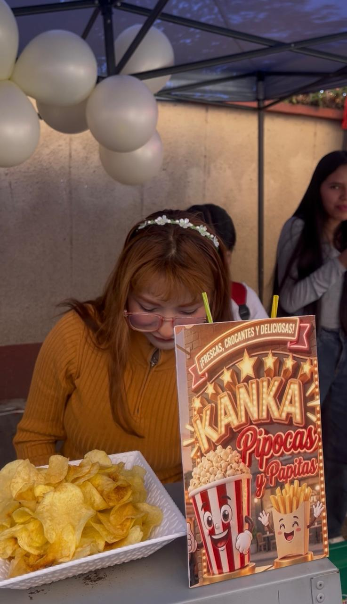
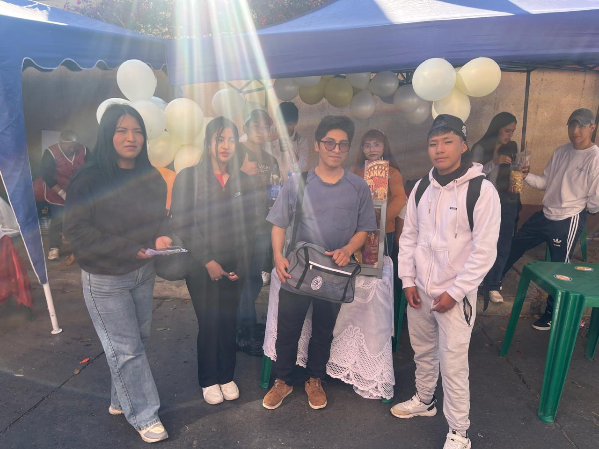

STAND 3: PIPOCAS Y PAPITAS
Este emprendimiento ofrece productos ideales para disfrutar durante una feria o compartir con amigos y familiares. Entre sus productos se encuentran las pipocas, las papitas y las sodas. Es una propuesta sencilla y atractiva para quienes desean comprar algo rico mientras recorren los puestos.
Fotografías del puesto


Fotografía de nuestra visita

Productos que ofrece
Pipocas: Un aperitivo práctico para disfrutar.
Papitas: Un producto popular para compartir.
Sodas: Bebidas para acompañar los aperitivos.
Experiencia de la visita
Durante mi visita pude conocer este puesto y observar la presentación de sus productos. Esta experiencia me permitió apreciar la variedad de pequeños emprendimientos que participan en la feria y el esfuerzo que realizan para ofrecer sus productos a los visitantes.